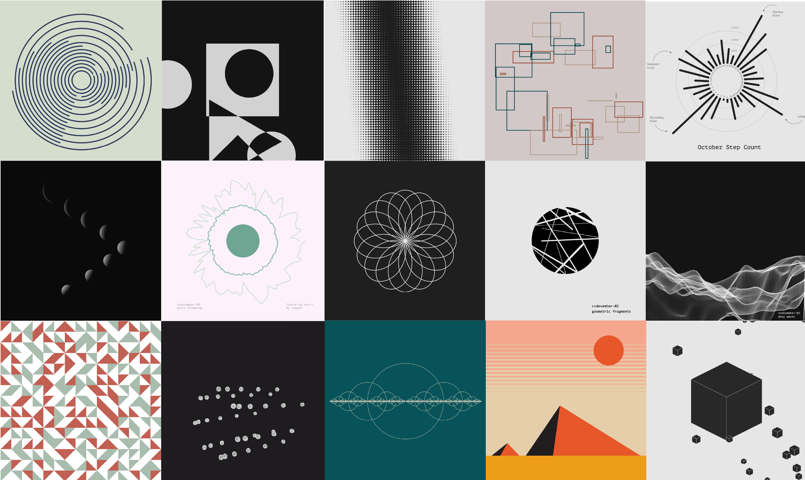
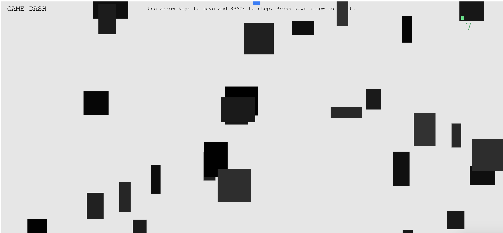

EXPERIMENTS
I often get too caught up in perfection to publish things. This is a place for me to play, create, experiment, and learn by doing.
Working mantra:
done is better than perfect.

2019: A VISUAL REVIEW
Six different data visualizations using data I tracked about myself during 2019. Each design was written using only Javascript and the p5.js library.

NEAR EARTH ASTEROIDS
A live visualization of near earth objects (mostly asteroids) passing earth today.

CODEVEMBER 2019
That one time I spent every day of November writing a new piece of creative code. Browse the 30 designs that came from it here .

GAME DASH
A little game built for #codevember using p5.js and p5.play.